Neural Networks have become a mainstay of modern machine learning. They're especially interesting because of their basic and understandable components, as well as their loose association with an idealized brain. They're easily implementable on pytorch and tensorflow, both python based machine learning modules.

Basic networks are really composed of rather simple objects. Like any network, neural nets have nodes, or neurons, that tend to apply relatively easy to compute function on a set of input data. In most models, each neuron applies some weighted sum to the input vector and then some non-linear activation function, which is then passed on to the next layer of neurons (or read as output on the final layer).

Much like the simple operations of linear algebra, the activation functions employed by neurons are generally simple: both to aid in computational complexity concerns when applying the model; and to streamline the process of backpropogation, described later (and which is involved in the training process). Perhaps the two most commonly seen activation functions are the logarithmic Sigmoid function and the more modern and widely used rectified linear unit (ReLU).

It's important that the activation function of each layer is non-linear, since this introduced non-linearity makes the otherwise repeated matrix multiplication non-redundant (since any product of matrices is itself a matrix). Thus, the use of such simple activation functions (such as the ReLU) is rational since we only require they introduce some non-linearity and not that they perform arbitrarily complex calculations.

As hinted at above, these neurons are then placed in parallel to one another to form layers, which are then connected in series to other layers. This layered structure is what gives neural networks their power to compute arbitrary functions (after training with adequate quantities and quality of data).
Intermediate layers of networks (those not given as input or taken as output) are referred to as hidden layers. A given neural network will consist of an arbitrary number of hidden layers (in series) of arbitrary width (number of stacked/parallel neurons). The width may vary from hidden layer to hidden layer.
In each intermediate layer of the neural network, the aggregation of inputs can be seen as a matrix acting on some input vector, as a natural extension of the single neuron case. The activation function (assuming it's the same for all the neurons) can then simply act on this transformed vector via element-wise distribution (though the parameters of the activation function may vary for each element of the vector).
Below is a prototypical hidden layer of a neural network, with \(k\) parallel neurons and an \(n-\)dimensional input. Note that each neuron has it's own weight vector and bias associated with it, which are then packaged as a weight matrix and a bias vector. Again, \(\sigma\) is the activation function employed by this layer.

An arbitrary number of these layers then may be concatenated to form an entire network. Often times, the final layer, or output layer will employ a different function to normalize and ease interpretations of such outputs, though a distinction between different potential tasks the network is employed in performing is appropriate here.
Since different networks are employed to perform different types of tasks, the actions performed on the output layers are often dependent on this distinction. The two most common tasks are regression (numerical prediction) and classification (probabilistic prediction). Some common functions appplied in the output layer of networks designed for these tasks are discussed below.
A network tasked with regression is one that (in the simplest case) predicts a single numerical target. As such, the output layer is effectively just one node and a single, local activation funciton may be employed. This may be the same function as that used in the hidden layers.
A more interesting case is that of classification. A network designed for classification is tasked with determining which class a given input is in, and thus should, ideally, give a one-hot encoded vector as output. This rarely is attainable and thus some non-local operation may be appropriate. One may simply choose the highest valued output node, but more Often the network will incoporate a function that normalizes the output to allow for a probabilistic interpretation.
An example of this would be the SoftMax functon which takes the exponential of each output and normalizes these relative their exponentiated sum. This is described mathematically as the following: \[ \text{SoftMax}_{z}(z_j)=\frac{e^{z_j}}{\sum_i e^{z_i}} \] This provides an advatange in that it is better at distinguishing otherwise closely valued outputs better, but still normalizes the output and thus allows for a probabilistic interpretation of the output vector. Below, the action of SoftMax is shown graphically as one output (before softmax, displayed along the x-axis) is varied. Note that the sum of all the outputs (plotted on the y-axis) remains one as it is varied.
A reasonable question one may have now is: 'is there any guarantee a given network is effective for some task?'. While a 'guarantee' is a strong condition, there are some promising theorems that suggest certain sets of networks are general enough to approximate arbitrary tasks.
The class of universal approximation theorems are essentially trying to prove that certain tasks of interest can always be adequatley approximated by some class of neural network.
A neural network is analagous to a, potentially huge, set of knobs and dials. At this point, one may ask how we could ever adjust such a large number of parameters to actually do something useful? And at that, can it ever do something useful? It turns out some neural network frameworks are amazingly good at classifying certain types of data, and this is accomplished with some rather straight-forward and mathematically clean training techniques.
To train a neural network, we need a set of training data and a set of test data.
The accuracy of a particular instance of a neural network over a given set of data can be metrized in the following way:
Backpropogation is a way to calculate how tweaking a certain parameter affects one of the model's output for a given input. It's really just an application of the chain rule from standard calculus on an admittedly large system.
A convolutional network actually generates what are called feature maps at each layer. These feature maps are the result of convoluting hierarchical elements with either a lower order feature map; or at the base layer, convolution of some basic elements with the input map. The specific form of these elements are now the parameters under flux in the training process. These elements are also known as filters.
Generally speaking, the convolutional layers of this form work best for feature extraction; whereas, a regular 'fully connected' network is better for the classification decision. Hence, many CNNs actually are a combination of several convolutional layers attached to a regular neural network.
Michael A. Nielsen has a great book on neural networks for free that can be found here. Another good, free, online resource is Goodfellow, Bengio, and Courville's book which can be found here. Coursera has plenty of wonderful interactive courses on neural networks and machine learning.
Perhaps the most beautiful introduction to neural networks in machine learning is this series by 3blue1brown.